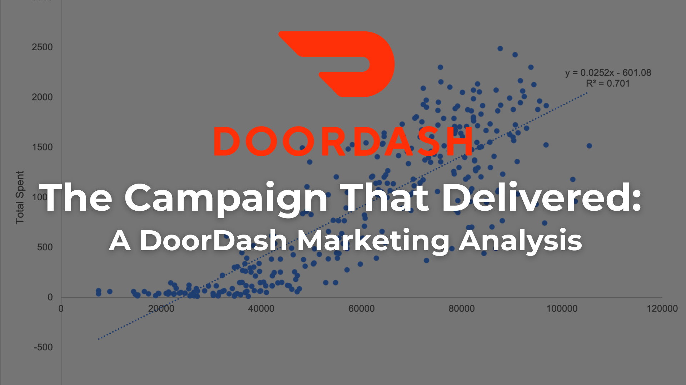

Starbucks Cluster Analysis
A data-driven marketing analysis using segmentation and RFM analysis to identify high-value customer segments and optimize Starbucks' marketing campaigns. This project reveals unexpected purchasing patterns, seasonal trends, and strategic recommendations for targeted advertising.
View Article
Mets Analysis: Building a Smarter Roster
An analytical study using Tableau to identify roster weaknesses and offseason improvement opportunities for the New York Mets. This data-driven analysis explores offensive performance, pitching performance, age trends, and potential player acquisitions using 2025 MLB season statistics.
View Article
Hospital SQL Analysis
Using SQL to identify over $100K in potential cost savings while ensuring equitable patient care and efficient resource use. This analysis explores hospital bed efficiency, cost drivers, treatment equity, and emergency care success stories.
View ArticleWorld Bank SQL Analysis
A comprehensive SQL analysis of World Bank funding data, analyzing over 1.4 million records to identify which countries receive the most funding, which owe the most, and uncovering surprising patterns in global finance and repayment behaviors.
View Article
Froth & Fortune: Iron Mining Analysis
An investigative data story analyzing iron concentrate levels at a flotation plant on June 1, 2017. Using Python (Pandas, Matplotlib, Seaborn), this project explores how hourly bubbles reveal hidden patterns in iron purity through exploratory visualizations, correlation analysis, and time series plots.
View ArticleEmployee Attrition Prevention Analysis
A comprehensive data mining project analyzing factors that lead to employee attrition and identifying strategies to prevent turnover. Using logistic regression and data visualization, this project reveals key insights about work-life balance, overtime, travel frequency, and demographic factors that impact employee retention.
View Article
DoorDash Marketing Analysis
A data-driven evaluation of DoorDash's marketing campaign, revealing who buys, how much they spend, and what drives conversions.
View Article